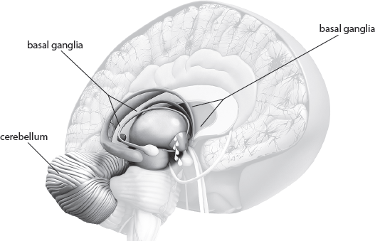

QUESTION: What does writing do to help your detoxing?
|
13 Write Step 3 |
Your brain writes through genetic expression, so when you write things down on paper or type into your computer or iPad or whatever gadget you use, you are mirroring this process. Writing down your thoughts is important in the Switch On Your Brain technique because the actual process of writing consolidates the memory and adds clarity to what you have been thinking about. It helps you better see the area that needs to be detoxed by allowing you to see your nonconscious and conscious thoughts in a visual way. It is almost like putting your brain on paper.
|
QUESTION: What does writing do to help your detoxing? |
The basal ganglia, the cerebellum, and the motor cortex are involved in this process. Let’s talk about the basal ganglia first.
The Industrious Basal Ganglia
Nestling between the cerebral cortex (on the outside of the brain) and the midbrain (in both the left and right hemispheres) are intricate bundles of neurological networks that are interconnected with the cerebral cortex. These bundles are the basal ganglia. The basal ganglia also put their imprint on the process of thinking and learning by helping the hippocampus, frontal lobe, and corpus callosum turn thought and emotion into immediate action.

Remember, all the parts of the brain work together in harmony; the process never involves just one structure alone. The basal ganglia do this by helping to ensure the memory gets built into the trees of the cerebral cortex. They also smooth out fine motor actions and set the idle rate for anxiety. Together with the motor cortex of the brain, the cerebellum helps you write down the information you have just understood. The cerebellum also helps with cognitive fluency, which is the ability to flow through a thought process smoothly as you evaluate the options.
Obviously, all your brain structures become very involved in the writing process because writing is a complex cognitive and metacognitive process requiring deep thinking. For example, the structures in the frontal lobe become highly active in the thinking and decision-making part of writing; the temporal lobe and hippocampus become involved in calling up existing memories; the emotional parts of every activated thought generate feelings; and the structures in the middle of the brain dealing with emotional perceptions work harder, just to mention a few things. The complexity God has designed is beautiful.
|
QUESTION: What do the basal ganglia help with? |
How to Write Your Thoughts
How you write down your thoughts is very important because there are ways of writing down information that work more effectively with your brain processes than traditional linear and one-color note taking. My workbook and DVD series called Switch On Your Brain[1] provides ideas on how to be brain-compatible when you are writing.
I always encourage anyone who keeps a thought journal to be creative with their notes. I also encourage anyone moving through the process of detoxifying thoughts to be playful with their thought journal. Don’t limit yourself to just writing in straight lines. If there are word associations or groupings that seem natural as you focus on information, group those on a page. Draw a picture or diagram to go along with that thought expression. Add color or texture. Pour out the impressions in your mind onto the page.
The Metacog
When I am helping students develop their learning and retention skills, I teach them a method I’ve developed called Metacog. The name might seem a little odd, but the process is fascinating.

It is simple: Group patterns that radiate from a central point. Each pattern linked to the central point creates a branch. Then continue to develop each of the branches by linking more detailed patterns. The process can continue until you have explored every nuance of your thought.
This method of pouring out your thoughts encourages both sides of the brain to work together to integrate the two perspectives of thought—the left side of the brain looks at information from the detail to the big picture and the right side of the brain from the big picture to the detail.
For full understanding to take place—which will result in the conversion of short-term memory to long-term memory—both perspectives of thought need to come together. So a Metacog is a way of seeing your thoughts on paper and evaluating the way you think and what you are thinking about. It is a great way of following your thought patterns so you can detox your thought life.
Chapter 13 Summary